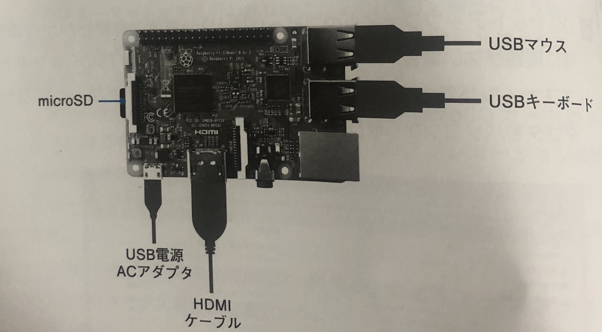
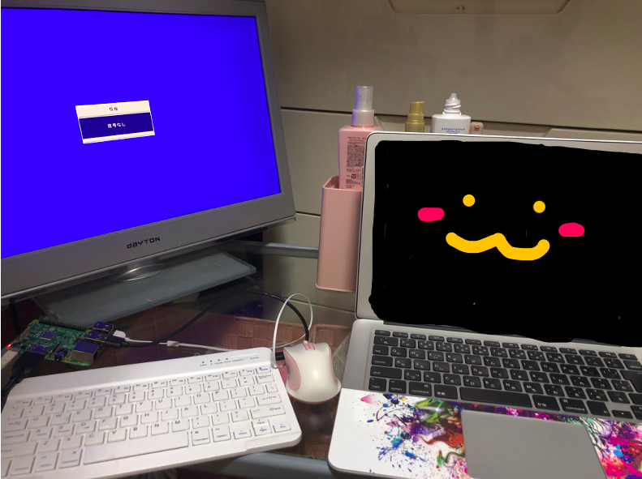
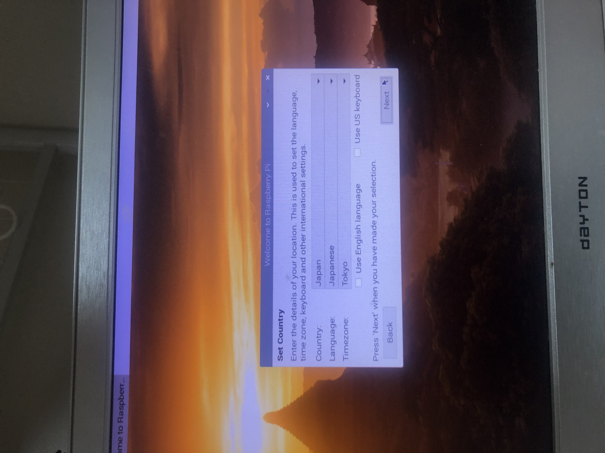
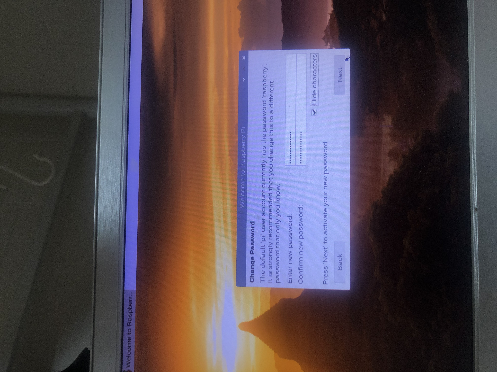
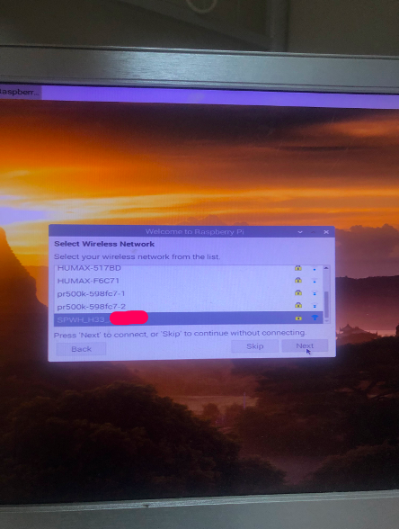
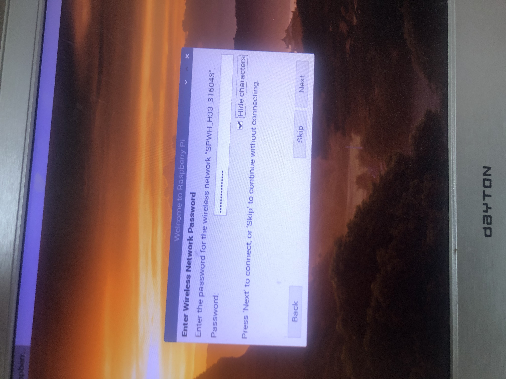
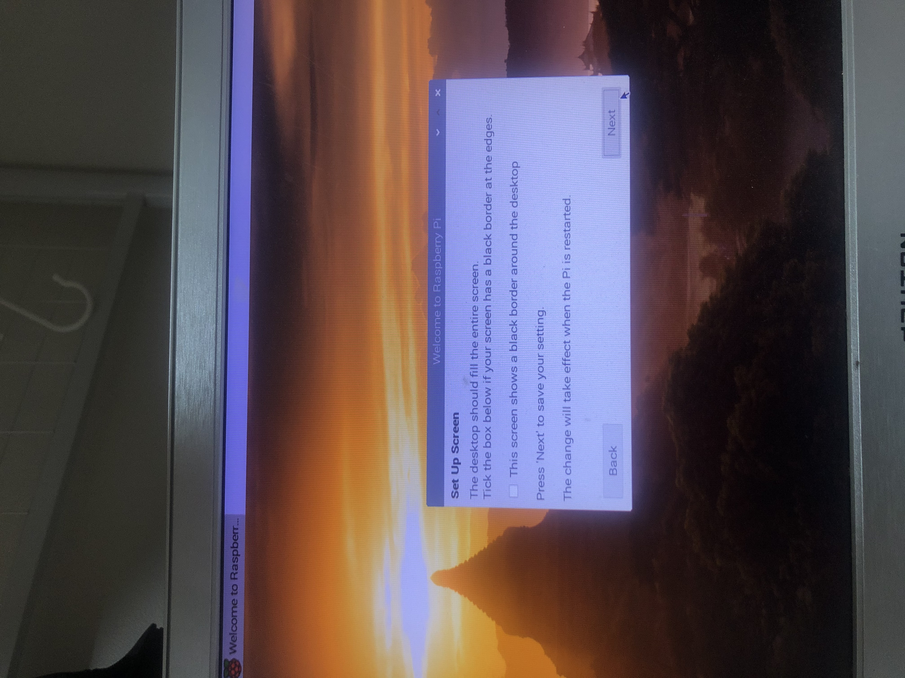
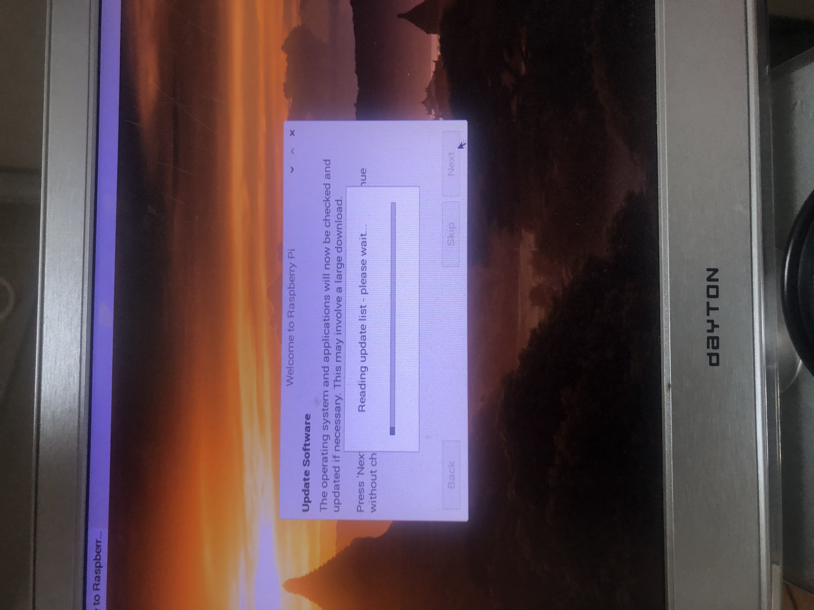
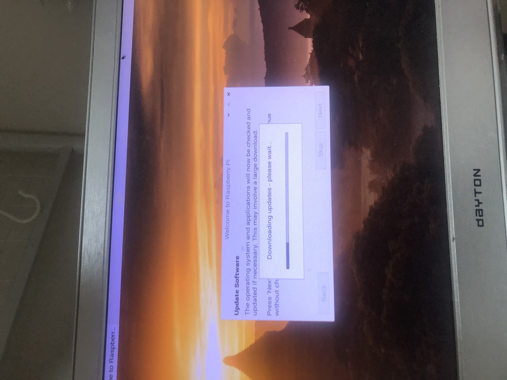

raspberry pi の初期設定②
②ラズパイを周辺機器につなげる。

ラズパイをそれぞれ上記のように配線し、
ディスプレイにつなげる。

ディスプレイに繋げ終わったら、
表示された指示通りに
設定していく。
（１）言語選択
国を日本に設定することで、自動的に言語も日本語となる。
選択したら、NEXTを押す。

（２）パスワードの設定
新しいパスワードを設定する。
設定が終わったら、NEXTを押す。

（３）ネットワークの設定
ネットワークを選択し、
パスワードを入力し、
インターネットに接続する。


（４）セットアップスクリーン
特に何もスクリーンに異常なければ、
そのままNEXTに進む。

（５）アップデートの開始
アップデートを開始すると
下記のような画面になる。
あとは終わるまでひたすら待つだけ。（１時間くらい）


（６）再起動・設定の完了
アップデートが終わったら、
再起動をして、
無事、再起動ができたら
設定が完了！！
さてこれで、ラズパイの初期設定が全て完了したので、
いよいよ、実装へ向けてのスタートに入っていきます！